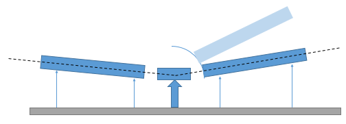

OFFSPEC
Warning
These instrument details pages provide historical context about the devices on a specific instrument, at the time they were migrated to IBEX. These pages may not be up to date with the latest instrument configuration.
Background & Timeline
OFFSPEC is an advanced reflectometer instrument at ISIS, on TS2. The OFFSPEC web page describes the background to the instrument.
This page collects information that will be useful for the implementation of the IBEX control system on OFFSPEC.
Information about OFFSPEC (and reflectometers in general)

Bench moves so that angle is correct this requires motors at front and back to change positions and the bench to slide in and out. This maintains the distance from the detector to the sample in an arc.
OFFSPEC Equipment
The equipment listed below is used on OFFSPEC. Please add new information (e.g. new items of equipment, new notes, information about drivers, etc. to this table).
VI |
Config(s) |
Config last updated |
IBEX equivalent |
|---|---|---|---|
|
standard IBEX |
||
|
standard IBEX / ISISDAE |
||
|
|
18/05/2022 |
|
Eurotherm |
EUROTHRM |
||
galil |
standard IBEX / GALIL |
||
Glassman LV power supply |
|
2019 |
Obsolete, not required |
Hitachi L7100 |
Obsolete |
||
Mk3 Chopper |
MK3CHOPR |
||
Jasco 4180 |
JSCO4180 |
||
Julabo (several models) |
JULABO |
||
Kepco |
KEPCO |
||
Keyence TM 3001P |
KYNCTM3K |
||
Knauer K-6 |
KNRK6 |
||
Knauer 1050 |
KNR1050 |
||
motion control (various) |
REFL - assume being handled in https://github.com/ISISComputingGroup/IBEX/issues/6245 |
||
Newport SMC100 |
SMC100 |
||
Nima Trough |
NIMATRO |
||
Mercury ITC |
MERCURY_ITC |
||
SM300-5 (power supply) |
|||
Tektronix AFG 3000 series |
TEKAFG3XXX |
||
Thurlby EX355P |
TTIEX355P |
||
Thurlby TGA1240 |
None (hardware is obsolete; functionality to be replaced by Tektronix function generators - we should not need to convert this driver) |
||
Thurlby TSX 3510P |
all |
- |
|
Aladdin-1000 syringe pump |
ALDN1000 |
||
WPI 2XX syringe pump |
SP2XX |
||
|
Digital i/o already covered in GALIL ioc |
||
|
Digital i/o already covered in GALIL ioc |
||
|
|||
|
all |
- |
|
|
DELFT, NIMA, “Single Config” |
2011/2012 |
Deprecated, not required |
|
One-off user kit; not required |
||
ISIS sample environment (digital i/o) |
|||
Linkam |
LINKAM95 |
||
Newport motor |
NEWPORT |
||
OFFSPEC BH |
Functionality covered in IBEX by a combination of KEPCO, KHLY2400, and scans library. https://github.com/ISISComputingGroup/IBEX/issues/7435 to write equivalent scans script to existing VI |
||
OFFSPEC DELFT RF |
|||
OFFSPEC high level |
REFL |
||
PI motion stage |
PIMOT |
||
Danfysik |
DFKPS |
||
ITC 503 |
ITC503 |
Older information:
Manufacturer |
Model |
Type |
Connection |
Driver |
Notes |
|---|---|---|---|---|---|
ISIS |
DAE 2 |
Detector Electronics |
Ethernet |
||
ISIS |
Mk3 |
Chopper |
N/A |
||
GALIL |
Motion Controller |
Ethernet |
|||
??? |
4-blade jaws |
||||
ISIS |
??? |
ISIS Vacuum System |
|||
Pfeiffer |
TPG300 |
Vacuum Gauge |
RS-232 |
EPICS |
|
Eurotherm |
Temperature Controller |
All models at ISIS |
RS-232 |
||
Julabo |
FL1703 |
Re-circulating Cooler |
RS-232 |
||
Julabo |
FL300 |
Re-circulating Cooler |
RS-232 |
||
Julabo |
FP-50 |
Water Bath |
RS-232 |
||
Julabo |
FP-52 |
Water Bath |
RS-232 |
||
Keithley |
2400 |
Source Meter |
RS-232 |
||
K6 |
Electric valve drive |
RS232 |
|||
1050 |
HPLC pump |
??? |
|||
~Hitachi~ |
~L-7100~ |
~HPLC pump~ |
??? |
||
PU-4180 |
HPLC pump |
??? |
|||
Nima Trough |
??? |
Trough |
??? |
||
BOP 100-10MG |
Bi-Polar Power Supply |
RS232 |
#187 |
||
BIT 4886 |
I/F card |
GPIB, RS-232 |
|||
BOP 50-2M-4886 |
Bi-Polar Power Supply |
RS232 |
|||
Delta-Elektronika |
SM300-5 |
PSU |
??? |
||
Thurlby |
EX355P |
PSU |
??? |
||
Thurlby |
TGA1240 |
Arbitrary Waveform Generator |
??? |
||
Thurlby |
TSX3510P |
PSU |
??? |
||
Oxford Instruments |
Mercury |
Temperature Controller |
RS-232 |
||
Oxford Instruments |
ITC503 |
Cryogenic System |
|||
Tektronix |
AFG 3021B |
Function Generator |
Ethernet |
#237 |
|
T95 |
RS232 |
||||
Watson Marlow |
323 |
Peristaltic Pump |
??? |
||
WPI |
Aladdin-1000 |
Syringe Pump |
??? |
||
WPI |
SP2xx |
Syringe Pump |
??? |
Note: DAE
See multi-detector and single-detector below.
Note: Choppers
OFFSPEC has a Mk3 chopper.
Note: Jaws
Provide information about OFFSPEC jaws.
Note: Vacuum System
Note: Eurotherm
Eurotherms are used to control temperature Orange Cryostat, CCR and Furnace devices.
{kind=link}
Note: Julabo
OFFSPEC uses Julabo water baths & re-circulating coolers
Julabo Water Bath (which models?)
Note: KEPCO
Kepco BOP 100-10MG PSU.
See also #3005Kepco BIT 4886 is an interface card for Kepco bi-polar (BOP) power supplies.
KEPCO BOP 50-2M-4886 PSU.
See also #188 & #200
Note: Keithley
Keithley 2400 Series Source Meter.
See also tickets #1826, #2695, #2801 and #3176.
Note: Hitachi
Hitachi L-7100 HPLC pump (no longer supported at ISIS). ~Can’t find L-7100 on [Hitachi web-site](http://www.hitachi-hightech.com/global/about/corporate/group/hhs (may be obsolete). Check existing SECI VI for logic and manual.~
Note: JASCO HPLC Pump
JASCO HPLC pump is a new (for ISIS) model of HPLC pump.
Note: Knauer
Knauer K-6 Electric Valve Drive. Knauer web site
K-6 model appears to have been superseded. Check existing SECI VI for logic and manual.
Support now implemented (28-03-2019). See #3781.
Note: Knauer HPLC
Knauer HPLC 1050 Knauer HPLC 1050 is discontinued.. Check existing SECI VI for logic and manual.
Support now implemented (04-01-2019). See #3262.
Note: Nima Trough
Nima Trough: SECI used a manufacturer supplied VI. We may need to do the same in IBEX (via lvDCOM).
Note: NIMA Technologies Ltd now seems to be part of Biolin Scientific.
The NIMA trough is used regularly on SURF. The manufacturer supplied VI is used to view graphs showing information about thin films.
The manufacturer has made additional software available for download. A copy of this software is located in
\\isis\shares\ISIS_Experiment_Controls\NIMA Trough\Nima_TR8.1.zip.Support now implemented (25-05-2019). See #3783
Note: Delta-Elektronika
Delta-Elektronika SM300-5 is a DC power supply. It is listed on page for Delta-Elektronika SM1500 series products.
Note: Thurlby
Thurlby Thandar Instruments EX355P PSU
see #155 and [#198]
IOC & OPI updated (18-07-2019). See #3784 (https://github.com/ISISComputingGroup/IBEX/issues/198).
Note: Oxford Instruments
Note: Linkam
There are VIs for this.
See also Linkam T95 controller and tickets #1106, #1496, #1509.
Note: Peristaltic Pumps
Watson Marlow 323 Peristaltic Pump
Support now implemented (14-08-2019). See #3786
Note: Syringe Pumps
-
Support now implemented (20-06-2019). See #3787
WPI SP2xx Syringe Pump - check specific model.
Support now implemented (05-07-2018). See #3261
Note: Tektronix
Note: ISIS Environment Monitor
The ISIS Environment Monitor is a device to monitor various environmental properties (temperature, pressure, humidity, etc). There is an existing list of commands and a VI to work from.
OFFSPEC Notes
OFFSPEC has the following specialist panels/systems:
OFFSPEC High Level
OFFSPEC Delft System
OFFSPEC ISIS Sample Environment
OFFSPEC Linkam
OFFSPEC Newport Piezo Stage
OFFSPEC BH (KEPCO 100-10MG & Keithley 2400)
OFFSPEC Delft RF
OFFSPEC PI Motion Stage
POLREF Danfysik
SURF Galil DIO
INTER Galil DIO
OFFSPEC has the following devices under motion control:
benches
coarse jaws
FOMs (Frame Overlap Mirror)
jaws
laser gimbal
OFFSPEC Analyser
point detector
Polarizer
reflectometer sample stack
OFFSPEC Genie Scripts
Similarly, Document information about OFFSPEC SECI Genie scripts here.